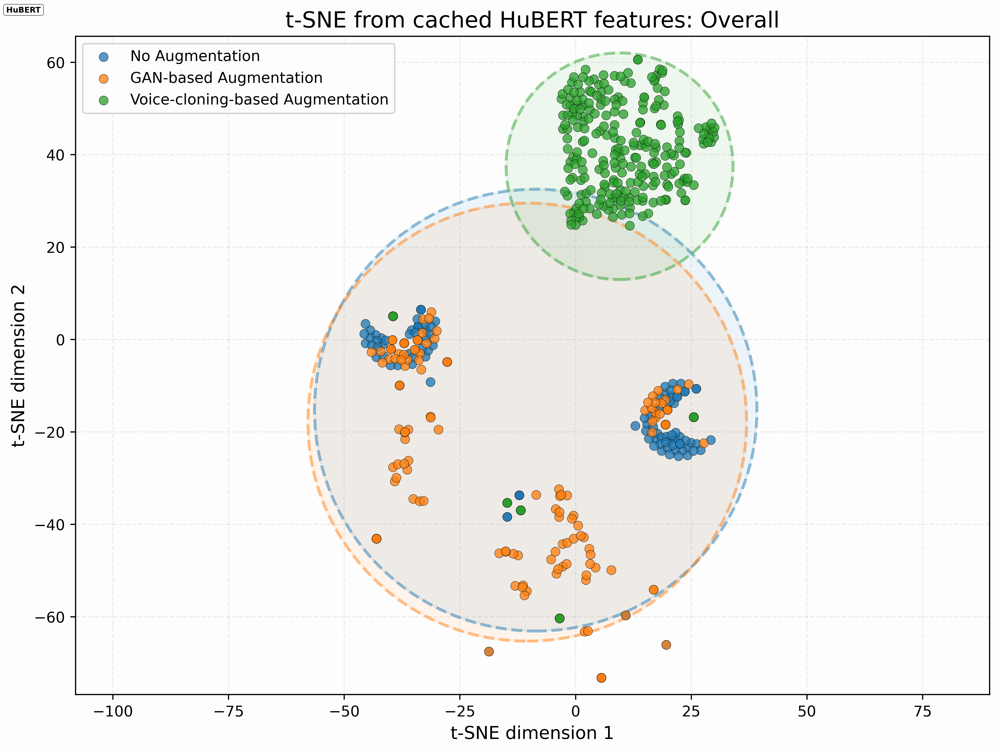

VisualizationAnimated SSL-feature t-SNE GIF and dataset-level t-SNE visualizations
TORGO audio samples
Representative examples comparing original dysarthric speech with GAN-based vocoder augmentation outputs, with terminology aligned to the manuscript focus.
TORGO sample-level audio comparison.
Sample
Original dysarthric speech
GAN-based vocoder augmentation Vocoder condition A
GAN-based vocoder augmentation Vocoder condition B
Sev_1_F04_0230
Sev_1_F04_0231
Sev_1_F04_0250
UA-Speech audio samples
Audio examples from UA-Speech, organized by sample identifier and neural augmentation category.
UA-Speech sample-level audio comparison.
Sample
Original dysarthric speech
GAN-based vocoder augmentation Vocoder condition A
GAN-based vocoder augmentation Vocoder condition B
F05_B1_C1_M3
M09_B1_CW63_M3
M09_B3_CW92_M3
DAU-KDAH audio samples
The DAU-KDAH dataset is listed for completeness while respecting access restrictions.
DAU-KDAH audio samples are not distributed on this page because of restrictions on medical data access.
t-SNE visualization and SSL-feature animation
The animated overall SSL-feature t-SNE visualization summarizes embedding-space behavior across feature extractors and augmentation conditions. Across TORGO, DAU-KDAH, and UA-Speech, GAN-based vocoder augmentation remains close to the original dysarthric speech in the t-SNE space, indicating preservation of prosodic and linguistic characteristics such as timing, rhythm, and imperfect articulation. In contrast, voice-cloning-based TTS augmentation forms a more separated cluster, suggesting a tendency to normalize speech patterns and reduce dysarthria-specific cues.

Animated GIF
Overall SSL-feature t-SNE visualization across augmentation conditions and representation spaces.
TORGO: t-SNE visualization.DAU-KDAH: t-SNE visualization.UA-Speech: t-SNE visualization.